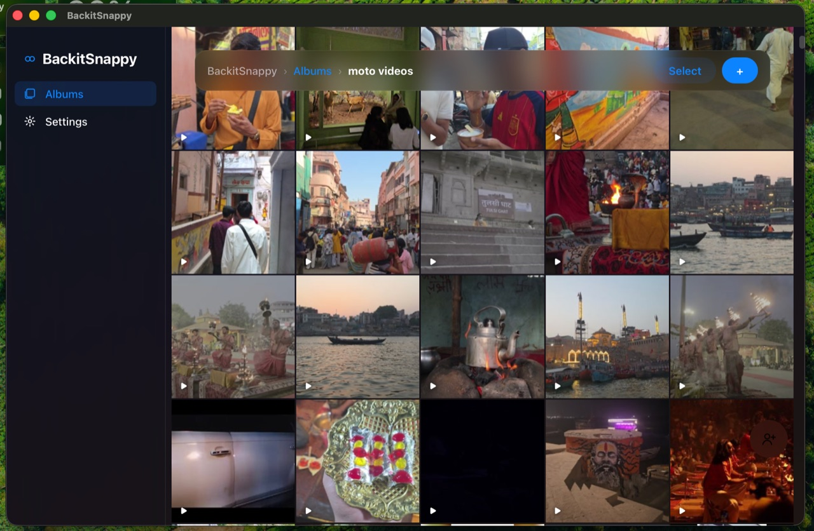
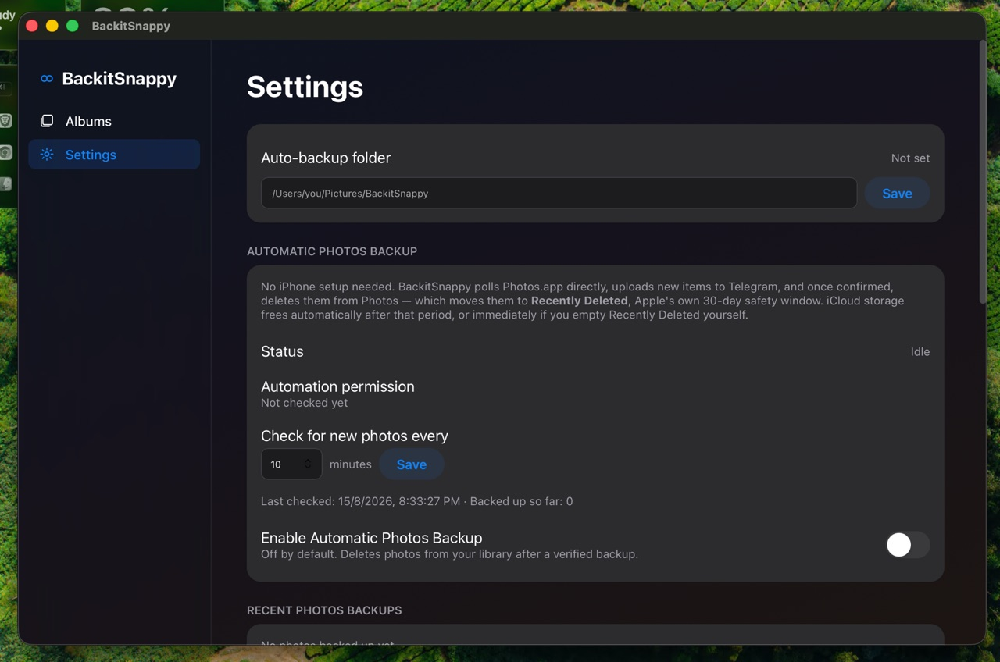

BackitSnappy turns the Telegram account you already have into private, effectively unlimited cloud storage for your Mac and iPhone — automatic backup, organized albums, and full control, for $0/month.
Every mainstream option asks you to trade money, privacy, or control — usually all three.
Free tiers shrink, paid tiers grow, and the bill never stops once your library outgrows the free allowance — which it always does.
Hit the limit and you're stuck deleting memories or paying more for a bigger tier you didn't ask for.
Your photos live on someone else's servers, under someone else's terms — cancel the subscription and you can lose access entirely.
None of the popular choices actually solve cost, privacy, and control at the same time.
| Option | Monthly cost | Storage limit | Your data, your control | Setup effort |
|---|---|---|---|---|
| iCloud+ / Google One | $3–$20+ | Fixed tiers, always eventually full | Vendor-controlled | Low |
| Dropbox / OneDrive | $10+ | Fixed tiers | Vendor-controlled | Low |
| Self-hosted NAS | $0/mo, high upfront cost | As much as you buy | Fully yours | High — hardware, networking, offsite backup |
| Manual / USB drives | $0/mo | As much as you buy | Fully yours | High — no automation, single point of failure |
| BackitSnappy | $0, forever | 2GB–4GB per file, effectively unlimited total | Your own Telegram account | Low — one-time setup, automatic after |
Telegram already gives every account generous per-file limits and no real total storage cap. BackitSnappy just puts that to work.
No tier to outgrow, no bill that creeps up. Telegram is the storage layer, and it costs nothing to use.
Every install is fully independent — your own Telegram session, your own Tailscale network, your own local database. Nothing shared or centralized between users, ever.
A watched Mac folder and an iPhone Shortcut over your own Tailscale network mean backup happens without you thinking about it.
Every line is inspectable. Run it as-is, or fork it and make it yours.
Set either one up once, and backing up stops being something you have to remember to do.
Set an auto-backup folder once, and anything added to it — or any of its subfolders — uploads on its own. No dragging files into the app.
A simple iOS Shortcut uploads straight from your phone over your own private Tailscale network — set it up once, run it whenever you like, or automate it entirely.

Organize backups into albums, invite others by Telegram username, and browse each one as a fast, Photos-app-style grid.
Photos and videos get real thumbnails so browsing your backup feels instant, not like scrolling a raw file list.
The same file never gets uploaded twice — content is hashed and deduplicated, so re-drops and duplicate selections are free.
Credentials live in the macOS Keychain only, the local API binds to localhost/Tailscale exclusively, and every request needs a pairing token.
2GB per file free, 4GB with Telegram Premium, and no meaningful ceiling on how much you back up in total.
Not a browser tab pretending to be an app — a proper macOS window that follows Apple's own design conventions.
BackitSnappy doesn't hold your data itself — it uploads to private channels on your own Telegram account, with no separate password or server in between. Anyone who can get into your Telegram account can see everything you've backed up. Turning on Telegram's own Two-Step Verification before relying on this is genuinely the most important step in the whole setup — it's covered first thing in the setup guide.

Free, open source, and set up once. Your data, your Telegram account, your control.